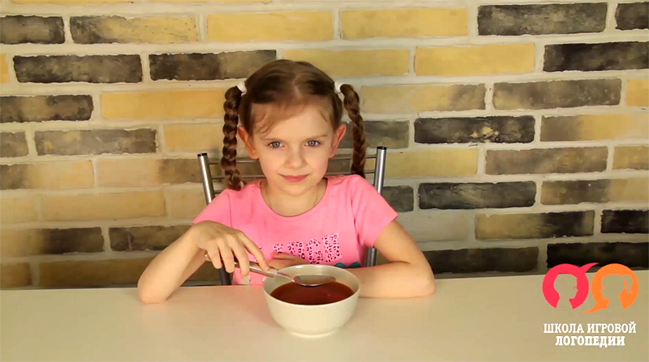
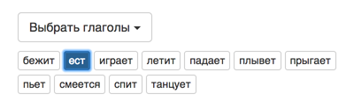
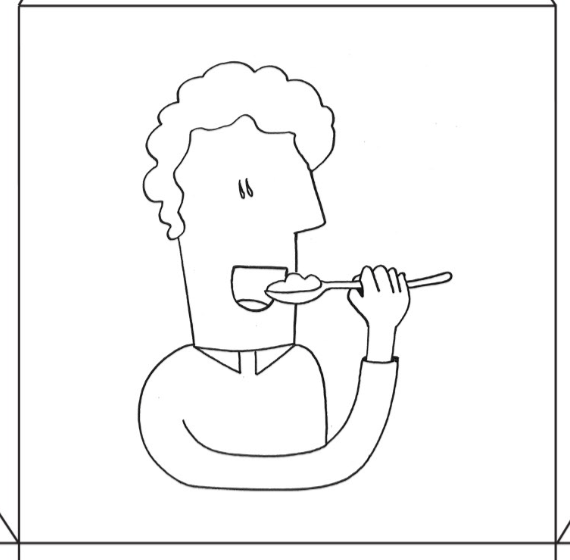
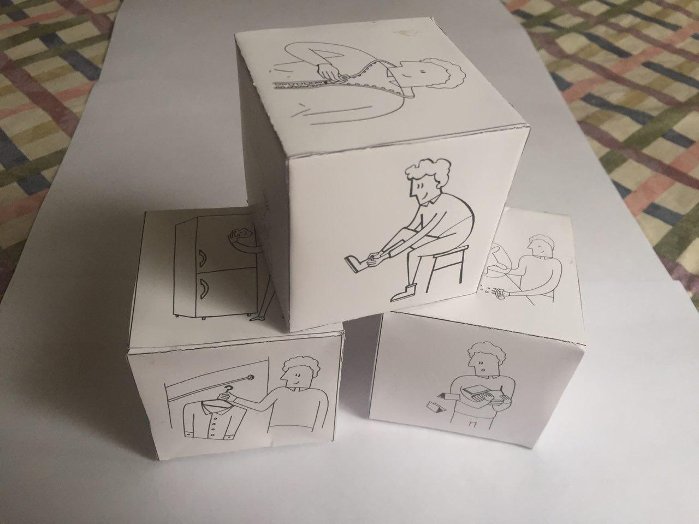
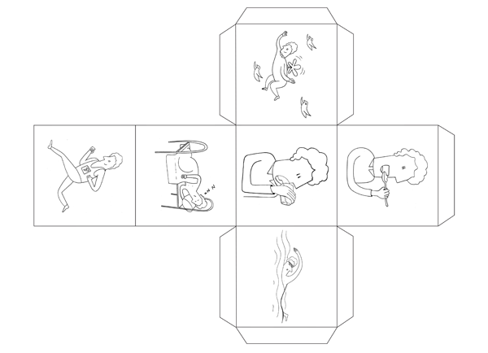

Глаголики
Для ребенка с речевыми нарушениями запоминание глаголов часто становится «камнем преткновения» на пути овладения фразовой речью. Перед вами пособие, которое поможет ребенку понять, что такое – глагол, и научит его отличать простые глаголы друг от друга.

Какие трудности встречаются чаще всего?
Ребенок вместо глагола называет предмет или человека.
Он может ответить «мальчик» - когда его спрашивают, что делает мальчик.
Или, видя маму с бананом, на вопрос, что делает мама. ответить «банан».
Почему так происходит?
Потому, что необходимо дать название действию, значение которого абстрактно.
Ребенок видит мальчика. Он видит банан. Но «ест» - он не видит, потому что значение глагола в отличие от значения существительного – абстрактно. Нужно сообразить, что речь идет о том, что в данный момент делает мама и что от малыша сейчас требуется присвоить название действию. Это новая задачка для ребенка: использование языковой абстракции. Раньше он называл только то, что видел: чашку, стул, пирамидку. И часто ребенок с речевой задержкой не в состоянии справиться с этой задачкой без помощи.
Ситуация осложняется тем, что обычно педагоги учат с детьми названия глаголов по так называемой «сюжетной картинке». Процесс идет очень туго, потому что происходящего действия ребенок не видит, а видит статику, которая "намекает" на действие: на картинке нарисована девочка, она сидит за столом, перед ней тарелка с супом. Ребенок должен «достроить изображение», отталкиваясь от атрибутов (девочка с ложкой у рта - значит сейчас она возьмет ложку в рот – значит она «ест»). Это вызывает трудности у ребенка с речевой задержкой.
Ребенок путает названия разных глаголов.
Он говорит вместо «ест» «пьет» или наоборот.
Почему так происходит?
Потому, что необходимо дать название действию, значение которого абстрактно.
Во – первых, опять же, потому что значение глагола абстрактно. Во вторых – визуально выполнение многих действий похоже. И без дополнительной опоры ребенку сложно отличить «надевает» от «снимает» - ведь разницу почти невозможно показать на рисунке.
Надевает
Снимает
Как помогут "Глаголики"?
Живые картинки
Мы подготовили "живые" картинки - небольшие видеосюжеты, которые показывают основные глаголы в динамике. Это 110 сюжетов с основными действиями (глаголами) в самых различных ситуациях. Малыш увидит на экране реально совершаемое действие!
Пиктограммы
К пособию прилагается визуальная опора. К каждому из глаголов нарисована пиктограмма, которая поможет запомнить его название и не путать его с близким по значению словом. Подробно об использовании визуальных опор читайте в инструкции.
Фильтры
В пособии представлена система фильтров, которая позволяет постепенно организовать материал по принципу «от простого к сложному» и плавно увеличивать сложность материала, отталкиваясь от потребностей конкретного ребенка. Вы сможете показывать одно и то же действие в разных ситуациях – это приучит ребенка запоминать, а не угадывать глагол по контексту (если «морковка» - значит «ест»). Вы сможете постепенно добавлять все новые глаголы и по своему желанию перемешивать их между собой. Подробно о вариантах поступательного усложнения материала читайте в инструкции.
Автоматическая оценка
В пособии моментальная автоматическая система оценки. После завершения каждой сессии программа подсчитывает количество верных/неверных ответов и ответов, которые были даны с подсказкой, в процентах. Это позволит вам отслеживать и фиксировать динамику запоминания глагола.
Правильно: 75%
С подсказкой: 15%
Неправильно: 10%
Поощрения
По завершении одной сессии обучения (количество сюжетов, которые демонстрируются за один раз, вы можете регулировать в настройках) ребенок увидит небольшое “поощрительное видео” – яркий 30 секундный фрагмент. «Видеопризы» вы сами можете выбирать в настройках.
Как работать?
В том, как разобраться в меню, понять, какая кнопочка что обозначает и как устроено пособие, вам поможет это видео. На оставшиеся вопросы мы ответим здесь.
Требования к компьютеру
Эта программа содержит сотни качественных видеороликов, и на старых компьютерах они могут проигрываться с задержкой.Эта программа не работает в браузере Internet Explorer!
Рекомендуем скачать для неё браузер Google Chrome.Если вы запутались в настройках программы:
Просто закройте ее и откройте заново, и все настройки сбросятся.Три уровня сложности
В «Глаголиках» три уровня сложности. Выберите тот, с которого «стартуете» вы:
Каждый изучаемый глагол «проводится» по трем уровням. После того как ребенок в 100 % случаев подает вам правильную пиктограмму и, указывая на нее, верно называет глагол, вы можете переходить к изучению следующего глагола.
Когда ребенок выучил два глагола работу следует продолжать в двух направлениях:
- С одной стороны – набирать новые глагольные значения.
- С другой стороны – учиться различать уже выученные глаголы между собой.
Работу по различению глаголов рекомендовано проводить на третьем уровне (хотя программа и позволяет перемешивать глаголы между собой на любом из уровней). И вот почему:
- Если различаемы ребенком пиктограммы будут подписаны (1 уровень), он будет читать тот или иной глагол, а не припоминать его.
- Или, если рядом с глаголом на экране будет автоматически отображаться та или иная верная пиктограмма (2 уровень) – он будет подбирать картинку на столе не из памяти, а ориентируясь на образцы.
Ни в первом, ни во втором случае это не гарантирует запоминания смысла глагола. Помните. Первый и второй уровни – подготовительные. Основная работа над различением глагольных значений ведется на уровне №3.
Бумажные материалы
Альбом для запоминания – позволит вам повторять названия уже выученных глаголов. Перелистывайте страницу за страницей и вспоминайте! А еще альбом можно раскрашивать!
Кубик с пиктограммами через некоторое время заменит вам маленькие карточки на столе. Пусть ребенок вертит кубик и выбирает нужное значение.
Подготовка
С помощью фильтров выберите глагол, который будете изучать. К примеру, это глагол «ест».
Из раздела «настройки» вы подбираете нужное вам количество заданий для одной сессии. Количество варьируется от 3-30. Если вашему ребенку пока трудно долго удерживать внимание – выбирайте немного заданий. Стандартное стартовое количество – 10 заданий в сессии. Если малыш за 10 сюжетов только «входит во вкус» - увеличивайте количество по своему усмотрению. Выбранное вами количество останется в настройках «по умолчанию» для всех последующих сессий , пока вы не решите изменить его.
Вырежьте из альбома карточки пиктограмм и положите пиктограмму «ест» на стол около ребенка.
Ура! Можно начинать!
Выполнение
Уровень 1
-
Включите ребенку живую картинку. Через несколько секунд укажите на пиктограмму на экране
и назовите действие одним словом: «Ест». Потом поднимите со стола пиктограмму
и укажите на нее пальцем.
Нажмите , т.к. ребенок пока не назвал глагол (хотя на этом уровне мы и не ждем, что он его назовет).Если ребенок не может оторваться от «движущейся картинки» или она движется слишком быстро - нажмите на кнопку , она остановит фрагмент. Если вы хотите возобновить движение на картинке - нажмите на кнопку (запустить зацикливание снова) или (проиграть фрагмент единожды).
Важно:
Называйте глагол одним словом, а не предложением. Избегайте вводных слов: «это…», «вот…». Единственное, что должно звучать, – глагол.
-
Еще несколько раз демонстрируйте видео, четко называя их.
В тот момент, когда вы называете глагол, поднимите со стола пиктограмму и
укажите на нее пальцем. Задача на этом уровне состоит в том, чтобы ребенок понял
технологию выполнения упражнения: он смотрит на видео, вы берете пиктограмму со стола,
указываете на нее и называете.
Нажмите , т.к. ребенок пока не назвал глагол (хотя на этом уровне мы и не ждем, что он его назовет). Нажмите , если ребенок назвал глагол вместе с вами. -
После того как ребенок привыкнет к ходу выполнения задания
(обычно это происходит на 4 или 5 раз), побудите его самостоятельно
поднять карточку с пиктограммой и указать на нее. После этого назовите глагол.
Нажмите , если ребенок не назвал глагол. Нажмите , если ребенок назвал глагол вместе с вами. -
После того, как ребенок после просмотра видео стабильно поднимает карточку
и указывает на нее пальцем, побудите его назвать глагол самостоятельно.
Можно использовать подсказки. Подсказки приведены в последовательности
от сильной к слабой:
- указание на подпись;
- первый звук, с которого начинается глагол;
- «синкопированный вдох» (для этого, указав на пиктограмму, нужно шумно взять воздух, как будто вы собираетесь что-то сказать);
- выразительный взгляд, который намекнет, что вы чего-то ждете.
Нажмите , если ребенок назвал глагол вместе с вами. В следующем сюжете уменьшайте подсказку. Нажмите , если ребенок не назвал глагол.Важно:
Советуем вам избегать вопроса «Что делает?» в качестве подсказки, потому что высока вероятность, что ребенок просто повторит ваш вопрос. Вторая опасность – что он будет называть действие только в ответ на ваш вопрос. Если инструкция «Что делает?» уже активно используется вами, вы можете ввести ее на первых порах, нужно как можно быстрее от нее отходить.
Важно:
Если вы будете нажимать кнопки оценки – программа посчитает вам количество верных ответов, ответов, данных с подсказкой и неверных ответов в процентах. Если вы не хотите считать правильные и неправильные ответы – вы можете нажимать кнопки и . Также кнопку можно нажимать, если вы хотите повторно показать видео. Будьте внимательны – если вы оцените ответ второй раз, программа автоматически увеличит количество предложений в сессии. Если не учитывать этого, результаты в процентах будут ошибочными.
- Когда ребенок стабильно начнет самостоятельно называть действие с визуальной подсказкой, отходите от нее. Это можно сделать, перейдя на следующий уровень.
Уровень 2
Важно:
дети, которые не умеют читать и не запоминают слова глобально, «стартуют» с этого уровня. По этой причине мы также подробно расскажем технологию введения значения глагола, как и на предыдущем уровне. Если вы перешли ко второму уровню с первого – начинайте работать с пункта №4.-
Включите ребенку живую картинку. Через несколько секунд укажите на пиктограмму на экране
и назовите действие одним словом: «Ест». Потом поднимите со стола пиктограмму
и укажите на нее пальцем.
Нажмите , т.к. ребенок пока не назвал глагол (хотя на этом уровне мы и не ждем, что он его назовет).Если ребенок не может оторваться от «движущейся картинки» или она движется слишком быстро - нажмите на кнопку , она остановит фрагмент. Если вы хотите возобновить движение на картинке - нажмите на кнопку (запустить зацикливание снова) или (проиграть фрагмент единожды).
Важно:
Называйте глагол одним словом, а не предложением. Избегайте вводных слов: «это…», «вот…». Единственное, что должно звучать, – глагол.
-
Еще несколько раз демонстрируйте видео, четко называя их.
В тот момент, когда вы называете глагол, поднимите со стола пиктограмму и
укажите на нее пальцем. Задача этого уровня в том, чтобы ребенок понял
технологию выполнения упражнения: он смотрит на видео, вы берете пиктограмму со стола,
указываете на нее и называете.
Нажмите , т.к. ребенок пока не назвал глагол (хотя на этом уровне мы и не ждем, что он его назовет). Нажмите , если ребенок назвал глагол вместе с вами. -
После того как ребенок привыкнет к ходу выполнения задания
(обычно это происходит на 4 или 5 раз), побудите его самостоятельно
поднять карточку с пиктограммой и указать на нее. После этого назовите глагол.
Нажмите , если ребенок не назвал глагол. Нажмите , если ребенок назвал глагол вместе с вами. -
После того как ребенок после просмотра видео стабильно поднимает карточку
и указывает на нее пальцем, слушая, как вы называете его
(или прочитывая его название на уровне 1)
побудите его назвать глагол самостоятельно. Можно использовать подсказки:
- указание на пиктограмму на экране;
- первый звук, с которого начинается глагол;
- «синкопированный вдох» (для этого, указав на пиктограмму, нужно шумно взять воздух, как будто вы собираетесь что-то сказать);
- выразительный взгляд, который намекнет, что вы чего-то ждете.
Нажмите , если ребенок назвал глагол вместе с вами. В следующем сюжете уменьшайте подсказку. Нажмите , если ребенок не назвал глагол.Важно:
Советуем вам избегать вопроса «Что делает?» в качестве подсказки, потому что высока вероятность, что ребенок просто повторит ваш вопрос. Вторая опасность – что он будет называть действие только в ответ на ваш вопрос. Если инструкция «Что делает?» уже активно используется вами, вы можете ввести ее на первых порах, нужно но как можно быстрее от нее отходить.
Важно:
Если вы будете нажимать кнопки оценки – программа посчитает вам количество верных ответов, ответов, данных с подсказкой и неверных ответов в процентах. Если вы не хотите считать правильные и неправильные ответы – вы можете нажимать кнопки и . Также кнопку можно нажимать, если вы хотите повторно показать видео. Будьте внимательны – если вы оцените ответ второй раз, программа автоматически увеличит количество предложений в сессии. Если не учитывать этого, результаты в процентах будут ошибочными.
-
Уходите от подсказок.
Важно:
Заранее выберите видеопризы. Некоторые дети – любят поезда, а другие – нет. Кто-то в восторге от воды, а кто-то боится ее панически. Поэтому обязательно выберите видеопризы заранее. Если вы не сделаете, программа будет произвольно показывать все имеющиеся сюжеты.
Уровень 3: Различение глагольных значений
Единственная опора, которая остается на этом уровне: пиктограмма на столе. Если ребенок самостоятельно называет действие, поднимая пиктограмму, мы считаем, что ответ правильный, и нажимаем .
Подготовка и ход работы такие же, как на уровнях 1,2.
После того как ребенок дает 100% правильных ответов, называя один глагол, переходите к изучению следующего глагола, действуя по той же технологии. После того как ребенок дает 100% правильных ответов на первый и второй глагол, продолжайте работу в двух направлениях.
- Увеличивайте количество глаголов по технологии, которая приведена выше;
- Учите ребенка дифференцировать значения глаголов между собой, перейдя на следующий уровень.
Различение глагольных значений
-
Выберите в фильтре два глагола, значение которых вы будете изучать. Выложите перед ребенком на стол две пиктограммы к изучаемым глаголам.
Важно:
Советуем вам избегать вопроса «Что делает?» в качестве подсказки, потому что высока вероятность, что ребенок просто повторит ваш вопрос. Вторая опасность – что он будет называть действие только в ответ на ваш вопрос. Если инструкция «Что делает?» уже активно используется вами, вы можете ввести ее на первых порах, нужно но как можно быстрее от нее отходить.
-
Включите ребенку живую картинку.
Учтите, что он еще не выполнял задания на различение глагольных значений и может запутаться.
Поэтому необходимо дать ему максимальное количество помощи: поднимите правильную пиктограмму
и назовите ее.
Для читающих детей начинайте работу с подписанными сюжетами,
чтобы увеличить количество помощи.
Нажмите , если ребенок не назвал глагол. Нажмите , если ребенок назвал глагол вместе с вами. - Включите следующую картинку (пролистав, если требуется, до второго глагола) и точно так же выберите пиктограмму и назовите ее самостоятельно. Нажмите , если ребенок не назвал глагол. Нажмите , если ребенок назвал глагол вместе с вами.
-
Научите ребенка правильно подавать нужную карточку,
по необходимости оказывая ему физическую помощь.
Как можно быстрее уходите от физической подсказки.
На первых порах называйте глагол самостоятельно, постепенно уменьшая подсказку.
Постепенно переходите к более слабым подсказкам.
На этом этапе наша цель – чтобы ребенок понял,
что теперь от него требуется выбирать один из двух глаголов.
Как можно подсказать:- назвать слово;
- назвать первый звук, с которого начинается глагол;
- «синкопированный вдох», (для этого, указав на пиктограмму, нужно шумно взять воздух, как будто вы собираетесь что-то сказать)
- выразительный взгляд, который намекнет ребенку, что вы чего-то от него ждете.
-
Сведите все подсказки на нет, уменьшая их.
Помните, что к моменту различения глагольных значений ребенок должен хорошо знать название глагола.
Если вы долго не можете уйти от подсказок и ребенок упорно делает ошибки –
значит, вы недоучили каждое конкретное значение глагола, и вам стоит вернуться на уровень выше.
Не забывайте фиксировать результаты обучения – это поможет вам анализировать, на верном ли вы пути. -
Увеличивайте количество глаголов, которые различаете.
Начиная с 6 глаголов заменяйте маленькие пиктограммы на столе кубиком с пиктограммами.
Удобно вводить глаголы в последовательности, в которой они скомпонованы на кубиках. Тогда после того, как вы освоите различение первых 6 глаголов, вы сможете использовать не 6 отдельных карточек пиктограмм, а один кубик. Ребенок будет искать нужную пиктограмму, вращая кубик, и указывать на нужную по обычному принципу. Это упростит вашу подготовку к занятию.Как дополнительно учить названия пиктограмм?
- Играть в “мемори” с перевернутыми вверх рубашкой парами пиктограмм.
- Листая с ребенком альбом для запоминания, в котором нарисованы все пиктограммы.
-
Начиная с 6 выученных пиктограмм, вводите вопрос: «Что делает?».
Для этого играйте с кубиком. Пусть ребенок кинет кубик. Покажите на сторону,
которая выпала, и спросите: «Что делает?»
Задавайте этот вопрос, листая альбом для запоминания.
Со временем начните задавать вопрос: «Что делает?», демонстрируя видеосюжеты.
Завершение
Когда ребенок выполнит заданное вами в настройках количество заданий, на экране появится видеоприз. Поощрительное видео будет появляться в конце сессии при любом результате ребенка. Для вас это время – возможность записать его результат в протокол обучения.
Всего программа содержит около 20 вариантов видеопризов. Выбрать призы, которые будут демонстрироваться вы можете в настройках.
Важно:
Заранее выберите видеопризы. Некоторые дети – любят поезда, а другие – нет. Кто-то в восторге от воды, а кто-то боится ее панически. Поэтому обязательно выберите видеопризы заранее. Если вы не сделаете, программа будет произвольно показывать все имеющиеся сюжеты.Важно:
Если вы не будете оценивать результат ребенка и будете просто листать видеофрагменты, пользуясь клавишами и , – видеоприз появляться не будет.Так работает пособие «Глаголики». Желаем вам приятного обучения!
Если вы хотите дальше расширять словарь глаголов и учить малыша составлять простые предложения – используйте серию «Живые фразы». Информация о серии – на нашем сайте.
Поощрения
Выберите видеоролики-поощрения. Эти ролики будут показываться ребенку, по одному ролику в конце каждой сессии.
Количество фраз в сессии
Укажите количество фраз, которое должно быть в сессии. (от 1 до 30)